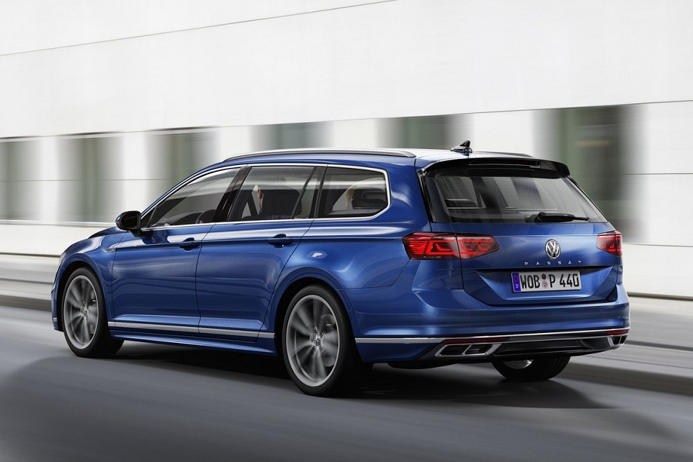

LKSWAGEN
LKSWAGEN
Passat Variant
Volkswagen Passat Variant. Modern Zaman Klasiği.
Hem sık iş seyahatlerinde hem de ailenizin günlük rutini için sürekli hareket halinde misiniz? Bu durumda en az sizin kadar esnek ama aynı zamanda prestijli bir araca sahip olmanız önemli. Çok yönlülüğü ve zamansız tasarımı ile öne çıkan Passat Variant, size ve ailenize üst düzey prestij, konfor ve kullanışlılık sunan bir modern zaman klasiği.
Tasarım

Parlak bir fikir.
Üstün teknoloji ürünü bu far sistemi, temel işlevi olan kısa ve uzun hüzmeli aydınlatma seçeneklerinden çok daha fazlasını sunar. Temel aldığı LED Matrix aydınlatma teknolojisi ile farklı sürüş koşullarına cevap verebilecek zengin bir ışık dağıtım yelpazesine ulaşmak için belirli LED modüllerini ayrı ayrı kontrol edebilir.1 (E) Üstelik Dinamik Uzun Far Asistanı "Dynamic Light Assist" ile birleştiğinde bu farlar, uzun hüzmeli farlar ile ilerlerken tespit edilen diğer araçların sürücülerinin gözlerini kamaştırmamak için de bu LED modüllerini ayrı ayrı kapatıp açabilir. (O) 1 Hız limitleri dahilinde.
KONFOR

Size özel bir sürücü ekranı.
Sürüş sırasında sadece hız ve devir sayaçlarını mı görmek istiyorsunuz? Yoksa detaylı performans verilerini ya da navigasyon haritasını mı..? Peki ya dinlediğiniz müziğin adını..? Tüm bunların hepsine ve daha fazlasına ne dersiniz? Çok fonksiyonlu direksiyon üzerindeki tuşlar sayesinde bu seçimi yapmak artık elinizde. Geleneksel gösterge tablolarının sınırlı kişiselleştirme ve bilgilendirme yeteneklerinin ötesine geçen, yüksek çözünürlüklü TFT LCD ekranda istediğiniz bilgi profilini rahatlıkla görebilirsiniz. (E) 26 cm (10,25") renkli TFT ekran. Çoklu yapılandırma olanağı.
Teknoloji

Esnek, verimli ve güçlü.
Passat Variant'ın motorları güçlü olduğu kadar ekonomik de. Bu nedenle otomobil kullanmayı seven; fakat yakıt tüketimini düşük tutmak isteyenler için Passat Variant TSI, mükemmel bir seçenek. Turboşarjlı Kademeli Enjeksiyon "TSI" teknolojisi, turbo boşluğuna sahip olmayan, en alt devirlerde dahi devreye girebilen hafif ve etkin bir egzoz turboşarjı ile Volkswagen'in geçmiş FSI motorlarından gelen direkt benzin enjeksiyon sistemini birleştirir. Bu sayede çok daha küçük motor hacimlerinden, çok daha fazla beygir gücü (PS) ve çekiş gücü (Tork) elde edilir. Defalarca Uluslararası Yılın Motoru "Engine of the Year" ödülü kazanan Volkswagen'in efsanevi TSI motorlarını denemeden, yüksek performansı, düşük tüketimle birleştiren gerçek bir modern benzinli motorla karşılaşmamışsınız demektir.
Güvenlik

Güvenli takip mesafesi, uygun hız limitleri.
Adaptif Hız Sabitleyici "ACC", önceden ayarladığınız hız limitini geçmenizi önler1 ve önünüzde seyreden araçla aranızdaki mesafeyi korumanızı sağlar². Böylece dur-kalk trafikte ilerlerken Passat Variant, tamamen otomatik olarak fren yapıp öndeki aracın arkasında durur ve bu araç ilerlemeye başladığında yine otomatik olarak yeniden hareket etmeye başlar. Adaptif Hız Sabitleyici "ACC" ile birlikte gelen Şehir İçi Acil Frenleme “Front Assist” ise radar sensörleri yardımıyla kritik mesafe durumlarını algılar ve Passat Variant'ın durma mesafesini kısaltmaya yardımcı olur². (O) 1 Maksimum 210 km/s hıza kadar. 2 Hız limitleri dahilinde.
Volkswagen Hakkında Modeller Ve Fiyatlar İletişim Sosyal Medya
İkinci El Araçlar Tüm Modeller Yetkili Satıcı Facebook
Ticari Araçlar SUV Modeller Online Servis Instagram
Satış Sonrası Hizmetler Araç Fiyatları İletişim Ve Destek Twitter
Kampanyalar Aksesuarlar Bilgi Formu Youtube
|